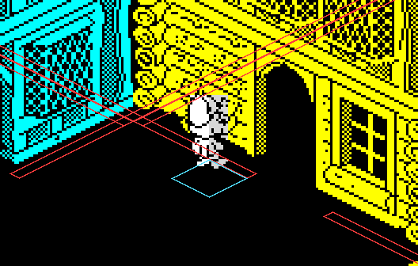
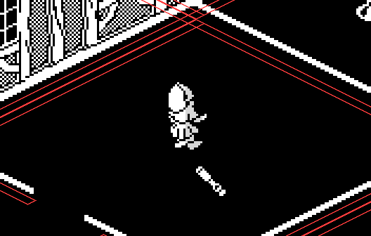

| How things move |
Nothing in Nightshade's town has a height, nothing falls, and nothing pushes anything else: things move over a flat map, and the only thing that stops them is a building's walls. Knight Lore's and Alien 8's movement is a different engine altogether, three axes of boxes tested against each other (Knight Lore, Alien 8); Nightshade's is its own, and this page takes it apart: the knight's walk, his turning, his two records, the walls, and how the other things find their way.
A record faces one of four ways, in bits 6 and 7 of +6. SET_STEP turns its speed into this turn's step (+A and +B): the speed along the one axis it faces, negative for the minus facings, nothing along the other. The step is then trimmed at the walls (MOVE_CLIPPED) and only then added to U and V (APPLY_STEP). Adding $40 to the facing is a quarter turn to the right.
| Facing | Along | On the screen | The knight is seen |
|---|---|---|---|
| $00 | +V | right and up the screen | from behind |
| $40 | +U | right and down | from the front |
| $80 | -V | left and down | from the front |
| $C0 | -U | left and up | from behind |
While the walk key is held, WALK_ON takes his speed halfway to his top speed each turn and rounds it down to an even number -- which means it never gets there: halfway from 8 to 10 is 9, and 9 rounded down is 8 again. His top speed is 10, and 18 while a bonus's faster walk lasts, so he walks at 8 and hurries at 16. When the key is let go he does not stop dead: COAST_TABLE's routine for his facing steps him on 4, then 2, then 1, until his place along the way he faces is a multiple of 8, so he always comes to rest on an eight-unit grid. Every step counts a footstep, and every fourth one (every second when hurrying) makes a sound.
Run in the simulator when this page was built, in the middle of an open cell facing +U, the walk key held for 8 turns from a standstill and then let go, once as the game starts him and once with TOP_SPEED and SPEED_TIME written as the bonus writes them (SPEED_BONUS):
| Top speed | Speed each turn, key held | U when let go | Steps after | U at rest |
|---|---|---|---|---|
| 10 | 4, 6, 8, 8, 8, 8, 8, 8 | 1722 | 4, 2 | 1728 |
| 18 | 8, 12, 14, 16, 16, 16, 16, 16 | 1778 | 4, 2 | 1784 |
The low three bits of his facing byte are a turn delay (TURN_KNIGHT): a turn sets it to 1, and while it is not 0 it counts down and he cannot turn again, so a turn key held down turns him a quarter every other turn. Held from a standstill facing +U ($40), the left key gave his facing byte turn by turn as $01, $00, $C1, $C0, $81, $80, $41, $40, $01: round to +V, -U, -V and back, a quarter every second turn.
With a joystick and directional control chosen on the menu, the stick's direction is a facing -- up +V, right +U, down -V, left -U -- and he turns a quarter towards it (either way, at random, if it is behind him), walking only once he faces it. With the town turned round the stick's directions are swapped end for end (SWAP_STICK) so that it still means the same way on the screen.
The knight is his legs (KNIGHT), which do all of the above (UPDATE_KNIGHT), and his top (KNIGHT_TOP), drawn over them (UPDATE_TOP). The top copies the legs' place every turn and shows the picture that matches the legs' walking frame; now and then, one turn in 32 while he is not turning, it strikes a pose of its own for two to nine turns. When the legs are stopped by a wall the top throws its arms out -- graphic 30 from the front, 22 from behind -- with a bump, and stays where it is. Two views, each mirrored or not, make his four facings: facing +U or -V he comes towards the viewer and shows his face (legs 24-29, top 40-45, which bit 3 of the graphic picks), facing +V or -U he is seen from behind (16-21 and 32-37).
Every cell type has a list of boxes (BOX_TABLE), four bytes a box: its centre in U and V and its half-sizes, in half units measured across the cell, which runs from 64 to 191 in them. The boxes are a building's walls, thin and running along the cell's edges, with gaps where the building has doors: a building is a room the knight can walk into. The cell types with four whole walls and no gaps -- types 1-2, the solid cells the game never starts him in -- are the only ones he cannot enter. How many boxes each type has:
| Boxes | Cell types |
|---|---|
| 0 | 0 |
| 4 | 1-2 |
| 5 | 3-6, 11-14, 19-22, 27, 29, 31 |
| 6 | 7-8, 15-16, 18, 23-24, 26, 28, 33-35 |
| 7 | 30, 32 |
| 8 | 9, 17, 25 |
| 16 | 10 |
MOVE_CLIPPED goes by the record's facing to one of four routines (MOVE_TABLE). Each finds the cells its front edge is in -- the edge at its centre plus or minus its half-size, from one corner to the other -- and, if this turn's step takes the edge into the next row or column of cells, the cells it goes into: at most four. For each, the record, moved by half its step, is tested against every box of the cell's type (HIT_BOXES_U, HIT_BOXES_V): they overlap along an axis when the distance between the centres is less than half the record's half-size plus the box's. The first box it runs into cuts the step by twice the overlap, which leaves the record touching the box's face, and sets bit 0 of its flags to say it was stopped.
Walked at a wall in the simulator: cell (9,23), the knight put at U 80 and V 160 across it, facing +V, towards the building on cell (9,24), type 22, with the walk key held:
| Turn | Speed | Step in V | After the walls | V | Stopped | Top's graphic |
|---|---|---|---|---|---|---|
| 1 | 4 | 4 | 4 | 6052 (row 23, 164) | 33 | |
| 2 | 6 | 6 | 6 | 6058 (row 23, 170) | 34 | |
| 3 | 8 | 8 | 8 | 6066 (row 23, 178) | 35 | |
| 4 | 8 | 8 | 8 | 6074 (row 23, 186) | 36 | |
| 5 | 8 | 8 | 8 | 6082 (row 23, 194) | 37 | |
| 6 | 8 | 8 | 8 | 6090 (row 23, 202) | 32 | |
| 7 | 8 | 8 | 8 | 6098 (row 23, 210) | 33 | |
| 8 | 8 | 8 | 8 | 6106 (row 23, 218) | 34 | |
| 9 | 8 | 8 | 8 | 6114 (row 23, 226) | 35 | |
| 10 | 8 | 8 | 8 | 6122 (row 23, 234) | 36 | |
| 11 | 8 | 8 | 6 | 6128 (row 23, 240) | set | 22 |
| 12 | 8 | 8 | 0 | 6128 (row 23, 240) | set | 22 |
| 13 | 8 | 8 | 0 | 6128 (row 23, 240) | set | 22 |
| 14 | 8 | 8 | 0 | 6128 (row 23, 240) | set | 22 |
On turn 11 the step of 8 was cut to 6, which left his front edge exactly against the wall, and after that every step was cut to nothing. His speed stays where it was: the wall does not slow him, it only trims each step. His top shows graphic 22, arms out.

The last turn of the walk, with the boxes of the nine cells round him drawn on the ground in red, where the projection puts them, and his own box in blue. The wall ahead of him is the building's near wall; the gap in it is a doorway.

The same walk started in line with the doorway, U 128: he walks on into the building, cell (9,24), type 22. His own cell is always drawn as an outline, so from inside a building its walls are lines on the ground.
The same trimming moves everything. What differs is how each decides where to go:
A wanderer's steps come from RANDOM_STEP: two units for each 0 among B bits of the random number, negative if the next bit is 0 -- the count of heads in B tosses, so steps near B are likeliest and the extremes rare. Run for every value of the byte it reads:
| B | Step | How often, over all 256 values |
|---|---|---|
| 4 | -8 to 8 | -8: 3%, -6: 12%, -4: 19%, -2: 12%, +0: 6%, +2: 12%, +4: 19%, +6: 12%, +8: 3% |
| 7 | -14 to 14 | -14: 0.4%, -12: 3%, -10: 8%, -8: 14%, -6: 14%, -4: 8%, -2: 3%, +0: 0.8%, +2: 3%, +4: 8%, +6: 14%, +8: 14%, +10: 8%, +12: 3%, +14: 0.4% |